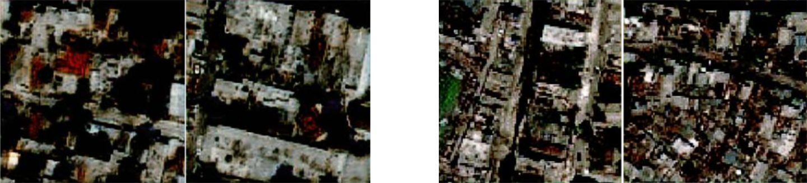

Generative Adversarial Networks(GAN)
The collected images were pre-processed to change brightness and contrast as the pre and post-catastrophe images are taken during different lighting conditions. These images were used to train deep learning models to generate more data. We trained a Pix2Pix network that uses paired images to convert from one domain to another. We also trained a CycleGAN network that performs unpaired image translation from one domain to another. We also modified the existing architecture of the generator module in CycleGAN. We replaced the classic UNet which is used as generator and replaced the backbone network from VGGNet to EfficientNet b3 and EfficientNet b4. The generated samples are shown below.
The CycleGAN model with different backbone networks was able to generate visually appealing samples. However, evaluating the generated images through visual inspection alone is an ineffective and overly subjective way to decide if these images are valid (meaning whether they emulate actual structural changes). In order to evaluate the generative model objectively, we used the inception score metric. Even though the images generated by EfficientNet b3 and b4 as backbone appear to be relatively better, they achieve a low inception score and it is also readily apparent that several pixels in the image are blacked out. Therefore, the problem as mentioned in the change detection part might lie in the discrepancy of the spatial resolution between the spatial resolution of pre (lower spatial resolution satellite) and post (higher spatial resolution aerial) damage-site images.

(a) Generated samples from Pix2Pix (b) Generated samples from classic CycleGAN
-

(c) Generated samples from CycleGAN with EfficientNet b3 (d) Generated samples from CycleGAN with EfficientNet b4